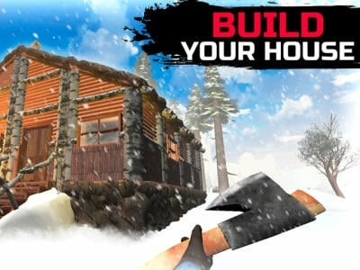

WinterCraft: Survival in the Forest
Survive, Craft, and Thrive in the Frozen Wilderness!
About The Game
WinterCraft: Survival in the Forest is an immersive survival experience that challenges players to survive in a harsh winter environment. Gather resources, craft essential tools, build shelters, and protect yourself from the elements and wildlife. With its dynamic weather system and day-night cycle, every decision you make could mean the difference between survival and freezing in the wilderness.
Crafting System
Create tools, weapons, and equipment to survive
Base Building
Construct and upgrade your shelter
Exploration
Discover resources and secrets in the vast forest
Key Features:
- Dynamic weather system
- Realistic survival mechanics
- Extensive crafting system
- Wildlife interaction
- Day-night cycle
- Resource management
- Temperature system
- Progressive skill system
More Hot Games You Might Like
Game Features
Survival Mechanics
Manage temperature, hunger, and thirst
Crafting
Create tools and equipment to survive
Base Building
Build and upgrade your shelter
Wildlife
Interact with forest animals
Frequently Asked Questions
How do I start surviving in the game?
▼
Begin by gathering basic resources like wood and stone. Build a simple shelter and craft basic tools. Keep an eye on your temperature and hunger meters, and always stay prepared for weather changes.
What should I prioritize crafting first?
▼
Focus on crafting basic tools first, such as an axe and pickaxe. Then work on building a basic shelter and creating a fire source to stay warm and cook food.
How does the weather system affect gameplay?
▼
The dynamic weather system affects your temperature, visibility, and ability to gather resources. Snowstorms can be particularly challenging, requiring proper preparation and shelter to survive.